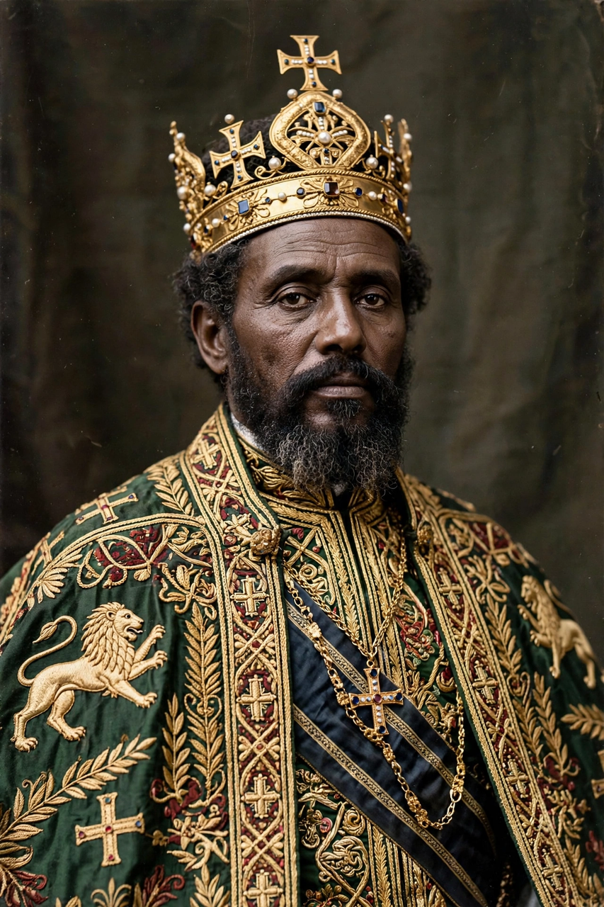

| Treaty of Wuchale | |
|---|---|
 | |
| Signed | 2 May 1889 |
| Location | Wuchale, Ethiopian Empire |
| Parties | Ethiopian Empire; Kingdom of Italy |
| Key dispute | Article XVII — Amharic vs. Italian text |
| Superseded by | Treaty of Addis Ababa (1896) |
The Treaty of Wuchale (also spelled Wichale or Uccialli) was signed on 2 May 1889 between Emperor Menelik II of Ethiopia and Count Pietro Antonelli for the Kingdom of Italy. A discrepancy between its Amharic and Italian versions — over whether Ethiopia had become an Italian protectorate — led directly to the First Italo-Ethiopian War and Italy's defeat at Adwa.
The treaty recognised Italian possession of coastal territories that became the colony of Eritrea, provided Ethiopia with a loan and Italian arms, and established friendship between the two states. It was negotiated after Italy's occupation of Massawa and the death of Emperor Yohannes IV in battle against the Mahdists.
Article XVII of the Amharic text stated that Menelik could conduct foreign relations through Italy if he wished; the Italian text stated that he must — making Ethiopia an Italian protectorate, which Italy duly announced to the European powers. Menelik denounced the fraud in 1890, appealed in vain to the European queens and kings, and formally abrogated the treaty in 1893.
Italy invaded in 1895 under General Oreste Baratieri. On 1 March 1896 Menelik's army annihilated the Italian force at the Battle of Adwa, and the Treaty of Addis Ababa recognised Ethiopia's absolute independence and annulled Wuchale.
Treaty of Addis Ababa (1896) · Oreste Baratieri · Battle of Adwa · Tigray Region